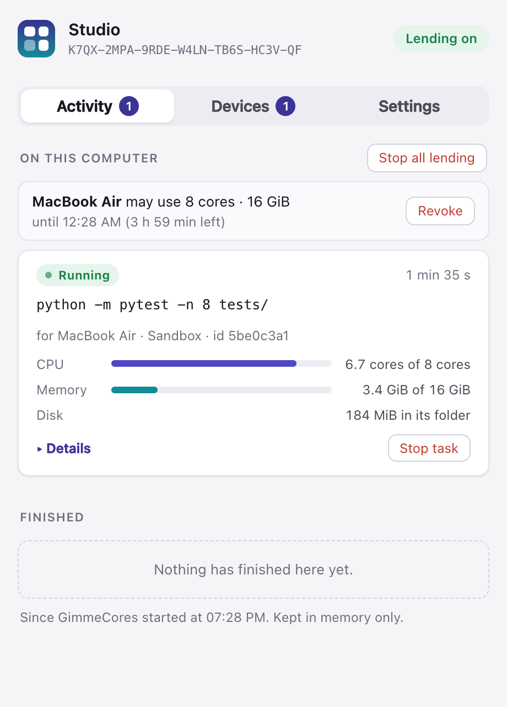
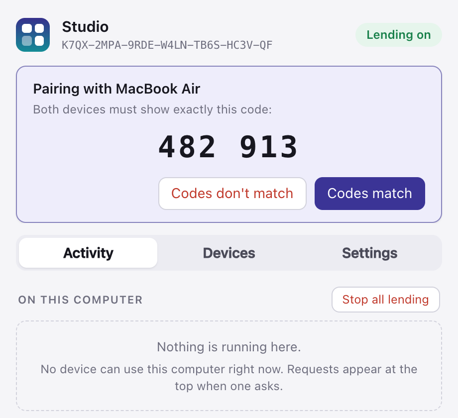
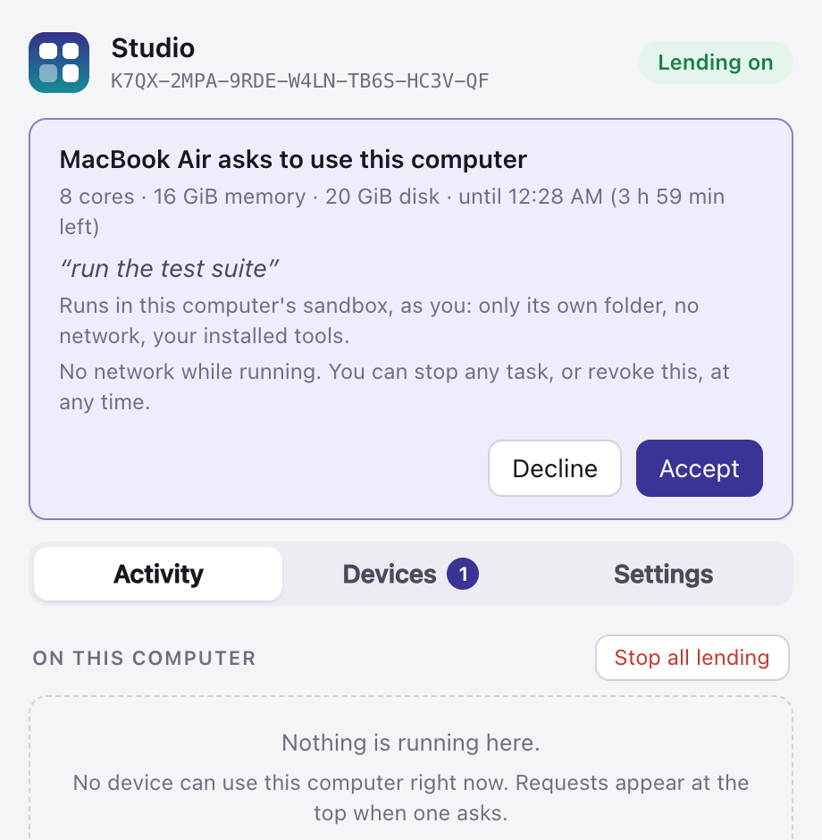

Free and open source · Early development
Borrow the cores of the computers next to you.
GimmeCores runs your builds, tests and scripts on your other computers, over Wi-Fi or a cable, and only after their owner says yes. The owner sets the limits, sees everything that runs, and can stop it at any time.
macOS (Apple silicon), Windows and Linux. Your devices talk to each other directly on your local network: no account, no cloud service.

From a terminal
$ gmc run -- pytest -n 8Sends your project to a computer that lent you its cores, runs it there and streams the logs back. The output files you ask for come back to your folder.
From Python
@gmc.task(cpus=1, memory="1g")
def render(frame: int) -> dict: ...
with gmc.Pool() as pool:
results = pool.map(render, range(100))Like multiprocessing, across your devices. Without a grant, the same code
runs locally. Python SDK
From AI agents
$ claude mcp add gimmecores -- \
gmc mcp --root "$PWD"Agents can run test suites and builds on devices that granted yours resources. They can never ask for or approve access: you and the other device's owner do.
Where it fits
Anywhere a computer nearby has spare cores, and its owner is happy to lend them.
Idle computers lying around
A spare Mac or Linux machine becomes extra cores for builds, test suites and batch
jobs. From Python, one pool.map() spreads the work over every computer
that said yes.
A room full of people
Colleagues you trust can lend each other idle machines for heavy builds and test runs. Each owner approves the request, sets the limits and can stop it at any time.
AI agents that need more compute
Coding agents connect through the MCP server and run jobs on your other computers, several at a time. They can never ask for or approve access: people do.
Your own Docker image, over there
When the owner allows it, gmc run --image sends your image from this
computer's Docker. Only the layers the other computer lacks travel, and it is removed
when your access ends.
How it works
Three steps, and the owner of each computer is in control of every one.
-

1 Pair your devices
Both screens show the same six-digit code; confirm it on both. A device pretending to be yours on the same Wi-Fi is turned away.
-

2 Ask, and the owner decides
The request says exactly what is wanted: cores, memory, disk, for how long, and how tasks will run. Nothing is lent until the owner accepts, with Touch ID or their password.
-
~/code/shop $ gmc run -- pytest -n 8 8 workers [214 items] .................................. [ 15%] .................................. [ 31%] .................................. [ 47%] .................................. [ 63%] .................................. [ 79%] .................................. [ 95%] .......... [100%] ====== 214 passed in 41.20s ====== ~/code/shop $
3 Run
Your project goes to the other computer and runs there, in its sandbox or a container (your own Docker image, if the owner allows it). Its output streams back to your terminal, and the files you ask for (
--out) land in your folder. The owner sees the task live, and can stop it.
See everything that runs on your computer
- Every task, live: its command (anything that looks like a secret hidden), which device sent it, and how it runs.
- What it asked for next to what it uses: CPU, memory, its folder's size and time. A figure that was not measured says so; it is never shown as zero.
- Stop one task, revoke a device, or stop all lending in one click. Revoking ends running work within seconds.
- Pauses by itself on battery, when hot, or while you use the computer, if you choose.
Built so you can say yes
Lending your computer is a big deal. This is what GimmeCores does about it, and what it cannot do.
Off until you turn it on
Lending is off after install. Every use needs a grant the owner accepted, with limits on cores, memory, disk and time.
The lender enforces the limits
Not the borrower. When a grant ends or is revoked, its tasks stop.
Sandboxed
Tasks run in a container or the operating system's sandbox, with only their own folder and no network by default.
Approvals need you
Accepting a request, pairing and turning lending on need Touch ID, Windows Hello or your password. Scripts and AI agents can send work, never approve it.
Encrypted, and local
Devices talk directly, encrypted and authenticated, on your local network. No relay servers, no account.
Logged on both sides
Pairings, grants and tasks go into a tamper-evident log on both computers
(gmc audit --verify).
What it cannot protect
The lender can see the code and data you send it, so lend to and borrow from your own devices. GimmeCores is in early development and has not been independently audited.
Read the details
Every protection, and every known gap, is in the threat model. Found a problem? Report it privately.
What it is not
GimmeCores does not make another computer's memory or GPU part of yours for any program: networks are 10 to 1,000 times too slow for that. It moves the work to where the cores are. GPU work is planned; today it lends CPU and memory.
Download
Looking for the latest release…
Install
- Open
GimmeCores.dmgand drag GimmeCores onto Applications. - Open it. GimmeCores is not signed with an Apple Developer ID yet, so the first time macOS blocks it: open System Settings › Privacy & Security and click Open Anyway.
- Click Start GimmeCores. Lending stays off until you turn it on.
- Later, it updates itself: Settings › Updates › Check for updates. It goes online only then, and installs only updates signed with the GimmeCores key.
Or build it from source
With Homebrew, which builds everything on your Mac:
brew tap tanuj24/gimmecores https://github.com/tanuj24/gimmecores
brew install --HEAD gimmecores # gmc, gmcd and GimmeCores.app
brew upgrade --fetch-HEAD gimmecores # later, to updateHomebrew keeps the app in its own folder, not in Applications. To find it in Applications, Launchpad and Spotlight:
mkdir -p ~/Applications && ln -sfn "$(brew --prefix)/opt/gimmecores/GimmeCores.app" ~/Applications/Or clone the repository and run packaging/macos/build-app.sh
(needs Rust).
Install
On Debian or Ubuntu: sudo apt install ./gimmecores_*.deb, then open
GimmeCores and click Start GimmeCores. The sandbox needs
bubblewrap.
Install the command-line tools
tar xzf gimmecores-*-unknown-linux-gnu.tar.gz
install -m 755 gimmecores-*-unknown-linux-gnu/{gmc,gmcd,gimmecores} ~/.local/bin/
gmc daemon # the background service; lending stays offThe sandbox needs bubblewrap. The desktop app and the .deb are
built from source for now (below).
Or build it from source
Needs Rust. In a clone of the repository:
packaging/linux/build-deb.sh # Debian/Ubuntu: dist/gimmecores_*.deb
sudo apt install ./dist/gimmecores_*.deb
# any distribution: ~/.local/bin and a systemd user service
cargo build --release && packaging/linux/install.sh --enableInstall
- Run the installer. It is not signed yet, so Windows SmartScreen asks first: choose More info, then Run anyway.
- Open GimmeCores from the Start menu and click Start GimmeCores. Approvals, such as pairing a device, need Windows Hello, or where it is not set up, your Windows password after Ctrl+Alt+Delete.
- On Windows this version borrows: it runs your work on your other computers. Lending a Windows PC comes in a later version.
Not available for Windows yet
The Windows version is in testing and comes with the next release. For now, use GimmeCores on a Mac or a Linux computer.
To check a download, compare its SHA-256
(shasum -a 256 <file> on macOS and Linux, Get-FileHash
<file> in Windows PowerShell) with the release's checksum files.
Questions
Is it free?
Yes. GimmeCores is open source under the Apache 2.0 licence, with no account and no paid tier.
Does anything go through the internet?
No. Paired devices find and talk to each other on your local network, directly. There is no relay server and nothing to sign up for.
Can a borrower see my files?
No. Their tasks run in a container or your computer's sandbox, which gives them only their own folder and no network. In the other direction, be aware that a lender can see the code and data you send it.
What if I need my computer back?
Stop a task, revoke a device or stop all lending from the app or the menu bar, at any time and without a password. You can also have lending pause on battery, when your computer is hot, or while you use it.
Can I run my own Docker image on another computer?
Yes, when its owner allows it. Ask for a grant that lets you send images
(gmc grants request <device> --images 8g), and gmc run --image
sends your image from this computer's Docker. Only the layers the other computer is
missing travel. It runs as locked down as any container there: no network, an
unprivileged user, a read-only system and hard limits. It is removed when your grants
end. Sending an image from Windows has not been tried yet.
Can several computers work on one job?
Yes, from Python: gmc.Pool() spreads pool.map() calls over every
computer that granted you resources, sizing batches so that none sits idle at the end.
From a terminal, each gmc run goes to one computer.
Can AI agents like Claude Code use it?
Yes. gmc mcp is an MCP server: an agent can list your devices, run commands
on one that granted yours resources, and check on its jobs. It cannot ask for or approve
access, and what comes back from the other computer is treated as data.
Why does macOS warn me when I open it?
GimmeCores is not signed with an Apple Developer ID yet, so macOS asks you to confirm the first time (System Settings › Privacy & Security › Open Anyway). Homebrew builds it on your own Mac instead, so there is nothing to confirm.
Which computers does it run on?
macOS (downloads are for Apple silicon), Windows 10 and 11 (borrowing; lending a Windows PC comes later) and Linux (command-line downloads; the desktop app from source). GPU work is planned.